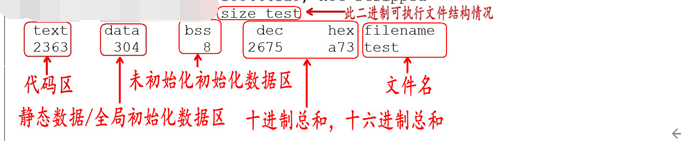
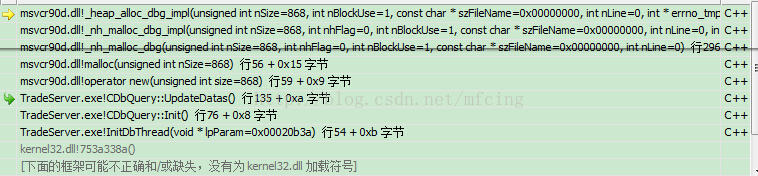
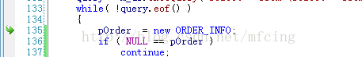
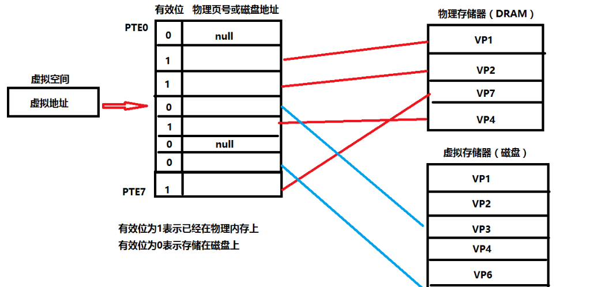

# 编译内存相关
# C++ 程序编译过程
编译过程分为四个过程：编译（编译预处理、编译、优化），汇编，链接。
编译预处理：处理以 # 开头的指令，产生 .i 文件；
主要的处理操作如下：
- 对全部的 #define 进行宏展开。
- 处理全部的条件编译指令，比方 #if、#ifdef、#elif、#else、#endif;
- 处理 #include 指令，这个过程是递归的，也就是说被包括的文件可能还包括其它文件；
- 删除全部的注释 // 和 /**/
- 加入行号和文件标识
- 保留全部的 #pragma 编译器指令
ps: 经过预处理后的 .i 文件不包括任何宏定义，由于全部的宏已经被展开。而且包括的文件也已经被插入到 .i 文件里。
编译、优化：将源码 .cpp 文件翻译成 .s 汇编代码；
- 词法分析：将源代码的字符序列分割成一系列的记号。
- 语法分析：对记号进行语法分析，产生语法树。
- 语义分析：判断表达式是否有意义。
- 代码优化：
- 目标代码生成：生成汇编代码。
- 目标代码优化：
编译会将源代码由文本形式转换成机器语言，编译过程就是把预处理完的文件进行一系列词法分析、语法分析、语义分析以及优化后生成相应的汇编代码文件。编译后的.s 是 ASCII 码文件。
汇编：将汇编代码 .s 翻译成机器指令的 .o 或.obj 目标文件；
-
汇编过程调用汇编器 AS 来完成，是用于将汇编代码转换成机器可以执行的指令，每一个汇编语句几乎都对应一条机器指令。
-
汇编后的.o 文件是纯二进制文件。
链接：产生 .out 或 .exe 可运行文件
- 汇编程序生成的目标文件，即 .o 文件，并不会立即执行，因为可能会出现：.cpp 文件中的函数引用了另一个 .cpp 文件中定义的符号或者调用了某个库文件中的函数。那链接的目的就是将这些文件对应的目标文件连接成一个整体，从而生成可执行的程序 .exe 文件。
详细来说，链接是将所有的.o 文件和库（动态库、静态库）链接在一起，得到可以运行的可执行文件（Windows 的.exe 文件或 Linux 的.out 文件）等。它的工作就是把一些指令对其他符号地址的引用加以修正。链接过程主要包括了地址和空间分配、符号决议和重定向。
* 最基本的链接叫做静态链接，就是将每个模块的源代码文件编译、汇编成目标文件（Linux：.o 文件；Windows：.obj 文件），然后将目标文件和库一起链接形成最后的可执行文件（.exe 或.out 等）。库其实就是一组目标文件的包，就是一些最常用的代码变异成目标文件后打包存放。最常见的库就是运行时库，它是支持程序运行的基本函数的集合。

链接分为两种：
静态链接：代码从其所在的静态链接库中拷贝到最终的可执行程序中，在该程序被执行时，这些代码会被装入到该进程的虚拟地址空间中。
把目标程序运行时需要调用的函数代码直接链接到了生成的可执行文件中，程序在运行的时候不需要其他额外的库文件，且就算你去静态库把程序执行需要的库删掉也不会影响程序的运行，因为所需要的所有东西已经被链接到了链接阶段生成的可执行文件中。
Windows 下以.lib 为后缀，Linux 下以.a 为后缀。
动态链接：代码被放到动态链接库或共享对象的某个目标文件中，链接程序只是在最终的可执行程序中记录了共享对象的名字等一些信息。在程序执行时，动态链接库的全部内容会被映射到运行时相应进行的虚拟地址的空间。
动态 “动” 在了程序在执行阶段需要去寻找相应的函数代码，即在程序运行时才会将程序安装模块链接在一起
具体来说，动态链接就是把调⽤的函数所在⽂件模块（DLL）和调⽤函数在⽂件中的位置等信息链接进目标程序，程序运⾏的时候再从 DLL 中寻找相应函数代码，因此需要相应 DLL ⽂件的⽀持 。（Windows）
包含函数重定位信息的文件，在 Windows 下以.dll 为后缀，Linux 下以.so 为后缀。
二者的区别：
- 静态链接是将各个模块的 obj 和库链接成一个完整的可执行程序；
- 动态链接是程序在运行的时候寻找动态库的函数符号（重定位），即 **DLL（Dynamic Link Library）** 不必被包含在最终的 exe 文件中；
- 链接使用工具不同:
- 静态链接由称为 “链接器” 的工具完成；
- 动态链接由操作系统在程序运行时完成链接；
- 库包含限制：
- 静态链接库中不能再包含其他的动态链接库或者静态库；
- 动态链接库中还可以再包含其他的动态或静态链接库。
- 运行速度：
- 静态链接运行速度快（因为执行过程中不用重定位），可独立运行
- 动态链接运行速度慢、不可独立运行
二者的优缺点：
-
静态链接：
- 缺点：浪费空间，每个可执行程序都会有目标文件的一个副本，这样如果目标文件进行了更新操作，就需要重新进行编译链接生成可执行程序（更新困难）；
- 优点：执行的时候运行速度快，因为可执行程序具备了程序运行的所有内容。
-
动态链接：
- 优点：节省内存、更新方便；
- 缺点：但是动态链接是在程序运行时，每次执行都需要链接，相比静态链接会有一定的性能损失。
# C++ 内存管理
https://blog.csdn.net/caogenwangbaoqiang/article/details/79788368
C++ 的内存分布模型：

从高地址到低地址，一个程序由内核空间、栈区、堆区、BSS 段、数据段（data）、代码区组成。
（Block Started by Symbol 通常是指用来存放程序中未初始化的全局变量和静态变量的一块内存区域。特点是：可读写的，在程序执行之前 BSS 段会自动清 0，所以，未初始的全局变量在程序执行之前已经成 0 了。）
常说的 C++ 内存分区：栈、堆、全局 / 静态存储区、常量存储区、代码区。
可执行程序在运行时会多出两个区域：
- 栈：存放函数的局部变量、函数参数、返回地址等，由编译器自动分配和释放。栈从高地址向低地址增长。是一块连续的空间。栈一般分配几 M 大小的内存。
- 堆：动态申请的内存空间，就是由 malloc 分配的内存块，由程序员控制它的分配和释放，如果程序执行结束还没有释放，操作系统会自动回收。堆从低地址向高地址增长。一般可以分配几个 G 大小的内存。
- 在堆栈之间有一个 共享区（文件映射区）。
- 全局区 / 静态存储区（.BSS 段和 .data 段）：存放全局变量和静态变量，程序运行结束操作系统自动释放，在 C 语言中，程序中未初始化的全局变量和静态变量存放在.BSS 段中，已初始化的全局变量和静态变量存放在 .data 段中，C++ 中不再区分了。
- 常量存储区（.data 段）：存放的是常量，不允许修改，程序运行结束自动释放。
- 代码区（.text 段）：存放程序执行代码的一块内存区域。只读，不允许修改，但可以执行。编译后的二进制文件存放在这里。代码段的头部还会包含一些只读的常量，如字符串常量字面值（注意：const 变量虽然属于常量，但是本质还是变量，不存储于代码段）
在 linux 下 size 命令可以查看一个可执行二进制文件基本情况：

# 栈和堆的区别
-
申请方式：栈是系统自动分配，堆是程序员主动申请。
-
申请后系统响应：分配栈空间，如果剩余空间大于申请空间则分配成功，否则分配失败栈溢出；申请堆空间，堆在内存中呈现的方式类似于链表（记录空闲地址空间的链表），在链表上寻找第一个大于申请空间的节点分配给程序，将该节点从链表中删除，大多数系统中该块空间的首地址存放的是本次分配空间的大小，便于释放，将该块空间上的剩余空间再次连接在空闲链表上。
-
栈在内存中是连续的一块空间（向低地址扩展）最大容量是系统预定好的，堆在内存中的空间（向高地址扩展）是不连续的。
-
申请效率：栈是有系统自动分配，申请效率高，但程序员无法控制；堆是由程序员主动申请，效率低，使用起来方便但是容易产生碎片。
-
存放的内容：栈中存放的是局部变量，函数的参数；堆中存放的内容由程序员控制。
此题总结：
- 申请方式的不同。 栈由系统自动分配，而堆是人为申请开辟；
- 申请大小的不同。 栈获得的空间较小，而堆获得的空间较大；
- 申请效率的不同。 栈由系统自动分配，速度较快，而堆一般速度比较慢；
- 存储的内容不同。栈在函数调用时，第一个进栈的是主函数中后的下一条指令（函数调用语句的下一条可执行语句）的地址，然后是函数的各个参数，在大多数的 C 编译器中，参数是由右往左入栈的，然后是函数中的局部变量。注意静态变量是不入栈的。 当本次函数调用结束后，局部变量先出栈，然后是参数，最后栈顶指针指向最开始存的地址，也就是主函数中的下一条指令，程序由该点继续运行。堆：一般是在堆的头部用一个字节存放堆的大小。堆中的具体内容由程序员安排。
# 变量的区别
全局变量、局部变量、静态全局变量、静态局部变量的区别：
- 全局变量就是定义在函数外的变量。
- 局部变量就是函数内定义的变量。
- 静态变量就是加了 static 的变量。 例如：static int value = 1
各自存储的位置：
-
全局变量，存储在常量区（静态存储区）。
-
局部变量，存储在栈区。
-
静态变量，存储在常量区（静态存储区）。
因为静态变量都在静态存储区（常量区），所以下次调用函数的时候还是能取到原来的值。
各自初始化的值：
- 局部变量，存储在栈区。局部变量一般是不初始化的。
- 全局变量和静态变量，都是初始化为 0 的，有一个初始值。
- 如果是类变量，会调用默认构造函数初始化。
从作用域看：
C++ 变量根据定义的位置的不同的生命周期，具有不同的作用域，作用域可分为 6 种：
全局作用域，局部作用域，语句作用域，类作用域，命名空间作用域和文件作用域。
-
全局变量：具有全局作用域。全局变量只需在一个源文件中定义，就可以作用于所有的源文件。当然，其他不包含全局变量定义的源文件需要用 extern 关键字再次声明这个全局变量。会一直存在到程序结束。
-
静态全局变量：全局作用域 + 文件作用域，所以无法在其他文件中使用。它与全局变量的区别在于如果程序包含多个文件的话，它作用于定义它的文件里，不能作用到其它文件里，即被 static 关键字修饰过的变量具有文件作用域。这样即使两个不同的源文件都定义了相同名字的静态全局变量，它们也是不同的变量。
-
局部变量：具有局部作用域。比如函数的参数，函数内的局部变量等等；它是自动对象（auto），在程序运行期间不是一直存在，而是只在函数执行期间存在，函数的一次调用执行结束后，变量被销毁，其所占用的内存也被收回。
静态局部变量：具有局部作用域。它只被初始化一次， 直到程序结束。自从第一次被初始化直到程序运行结束都一直存在，它和全局变量的区别在于全局变量对所有的函数都是可见的，而静态局部变量只对定义自己的函数体始终可见。
从分配内存空间看：
- 静态存储区：全局变量，静态局部变量，静态全局变量。
- 栈：局部变量。
各自的应用场景：
- 局部变量就是我们经常用的，进入函数，逐个构造，最后统一销毁。
- 全局变量主要是用来给不同的文件之间进行通信。
- 静态变量：只在本文件中使用，局部静态变量在函数内起作用，可以作为一个计数器。
例子：
void func(){ | |
static int count; | |
count ++; | |
} | |
int main(int argc, char** argv){ | |
for(int i = 0; i < 10; i++) | |
func(); | |
} |
说说静态变量在代码执行的什么阶段进行初始化？
static int value // 静态变量初始化语句 |
对于 C 语言： 静态变量和全局变量均在编译期进行初始化，即初始化发生在任何代码执行之前。
对于 C++： 静态变量和全局变量仅当首次被使用的时候才进行初始化。
助记： 如果你使用过 C/C 你会发现，C 语言要求在程序的最开头声明全部的变量，而 C 则可以随时使用随时声明；这个规律是不是和答案类似呢？
# 全局变量定义在头文件中有什么问题？
如果在头文件中定义全局变量，当该头文件被多个文件 include 时，该头文件中的全局变量就会被定义多次，导致重复定义，因此不能再头文件中定义全局变量。
# 内存对齐
什么是内存对齐？内存对齐的原则？为什么要进行内存对齐，有什么优点？
内存对齐：编译器将程序中的每个 “数据单元” 安排在字的整数倍的地址指向的内存之中
内存对齐的原则：
-
结构体变量的首地址能够被其最宽基本类型成员大小与对齐基数中的较小者所整除；
-
结构体每个成员相对于结构体首地址的偏移量 （offset）都是该成员大小与对齐基数中的较小者的整数倍，如有需要编译器会在成员之间加上填充字节 （internal padding）；
-
结构体的总大小为结构体最宽基本类型成员大小与对齐基数中的较小者的整数倍，如有需要编译器会在最末一个成员之后加上填充字节（trailing padding）。
进行内存对齐的原因：（主要是硬件设备方面的问题）
- 某些硬件设备只能存取对齐数据，存取非对齐的数据可能会引发异常；
- 某些硬件设备不能保证在存取非对齐数据的时候的操作是原子操作；
- 相比于存取对齐的数据，存取非对齐的数据需要花费更多的时间；
- 某些处理器虽然支持非对齐数据的访问，但会引发对齐陷阱（alignmenttrap）；
- 某些硬件设备只支持简单数据指令非对齐存取，不支持复杂数据指令的非对齐存取。
内存对齐的优点：
- 便于在不同的平台之间进行移植，因为有些硬件平台不能够支持任意地址的数据访问，只能在某些地址处取某些特定的数据，否则会抛出异常；
- 提高内存的访问效率，因为 CPU 在读取内存时，是一块一块的读取。
# 什么是内存泄露
内存泄漏：由于疏忽或错误导致的程序未能释放已经不再使用的内存。
进一步解释：
- 并非指内存从物理上消失，而是指程序在运行过程中，由于疏忽或错误而失去了对该内存的控制，从而造成了内存的浪费。
- 常指堆内存泄漏，因为堆是动态分配的，而且是用户来控制的，如果使用不当，会产生内存泄漏。
- 使用 malloc、calloc、realloc、new 等分配内存时，使用完后要调用相应的 free 或 delete 释放内存，否则这块内存就会造成内存泄漏。
- 指针重新赋值
char *p = (char *)malloc(10); | |
char *p1 = (char *)malloc(10); | |
p = np; |
开始时，指针 p 和 p1 分别指向一块内存空间，但指针 p 被重新赋值，导致 p 初始时指向的那块内存空间无法找到，从而发生了内存泄漏。
# 怎么防止内存泄漏？内存泄漏检测工具的原理？
防止内存泄漏的方法：
- 内部封装：将内存的分配和释放封装到类中，在构造的时候申请内存，析构的时候释放内存。（说明：但这样做并不是最佳的做法，在类的对象复制时，程序会出现同一块内存空间释放两次的情况）
- 智能指针：智能指针是 C++ 中已经对内存泄漏封装好了一个工具，可以直接拿来使用，将在下一个问题中对智能指针进行详细的解释。
VS 下内存泄漏的检测方法（CRT）：
在 debug 模式下以 F5 运行：
#define CRTDBG_MAP_ALLOC | |
#include <stdlib.h> | |
#include <crtdbg.h> | |
// 在入口函数中包含 _CrtDumpMemoryLeaks (); | |
// 即可检测到内存泄露 | |
// 以如下测试函数为例： | |
int main(){ | |
char* pChars = new char[10]; | |
_CrtDumpMemoryLeaks(); | |
return 0; | |
} |
# 智能指针有哪几种？智能指针的实现原理？
智能指针是为了解决动态内存分配时忘记释放内存导致的内存泄漏以及多次释放同一块内存空间而提出的。C++11 中封装在了 #include < memory > 头文件中。
C++11 引入了 3 个智能指针类型：
-
std::unique_ptr ：独占资源所有权的指针。
-
std::shared_ptr ：共享资源所有权的指针。
-
std::weak_ptr ：共享资源的观察者，需要和 std::shared_ptr 一起使用，不影响资源的生命周期。
注：std::auto_ptr 已被废弃。
共享指针（shared_ptr）：资源可以被多个指针共享，使用计数机制表明资源被几个指针共享。通过 use_count () 查看资源的所有者的个数，可以通过 unique_ptr、weak_ptr 来构造，调用 release () 释放资源的所有权，计数减一，当计数减为 0 时，会自动释放内存空间，从而避免了内存泄漏。
独占指针（unique_ptr）：独享所有权的智能指针，资源只能被一个指针占有，该指针不能拷贝构造和赋值。但可以进行移动构造和移动赋值构造（调用 move () 函数），即一个 unique_ptr 对象赋值给另一个 unique_ptr 对象，可以通过该方法进行赋值。
弱指针（weak_ptr）：指向 shared_ptr 指向的对象，能够解决由 shared_ptr 带来的循环引用问题。
智能指针的实现原理： 计数原理。
# 智能指针应用举例
unique_ptr
unique_ptr 的使用比较简单，也是用得比较多的智能指针。当我们独占资源的所有权的时候，可以使用 unique_ptr 对资源进行管理 —— 离开 unique_ptr 对象的作用域时，会自动释放资源。这是很基本的 RAII 思想。（Resource Acquisition Is Initialization）是由 c++ 之父 Bjarne Stroustrup 提出的，中文翻译为资源获取即初始化，他说：使用局部对象来管理资源的技术称为资源获取即初始化；这里的资源主要是指操作系统中有限的东西如内存、网络套接字等等，局部对象是指存储在栈的对象，它的生命周期是由操作系统来管理的，无需人工介入。
-
自动管理内存
使用裸指针时，要记得释放内存。{int* p = new int(100);
// ...delete p; // 要记得释放内存
}使用 unique_ptr 自动管理内存。
{std::unique_ptr<int> uptr = std::make_unique<int>(200);
//...// 离开 uptr 的作用域的时候自动释放内存} -
unique_ptr 是 move-only 的，也是实现将一个 unique_ptr 对象赋值给另一个 unique_ptr 对象的方法
{std::unique_ptr<int> uptr = std::make_unique<int>(200);
std::unique_ptr<int> uptr1 = uptr; // 编译错误，std::unique_ptr<T> 是 move-only 的
std::unique_ptr<int> uptr2 = std::move(uptr);
assert(uptr == nullptr);
} -
unique_ptr 可以指向一个数组
{std::unique_ptr<int[]> uptr = std::make_unique<int[]>(10);
for (int i = 0; i < 10; i++) {
uptr[i] = i * i;
}for (int i = 0; i < 10; i++) {
std::cout << uptr[i] << std::endl; //0 1 4 9 ...81
}}也可以用向量：
unique_ptr<vector<int>> p (new vector<int>(5, 6)); //n = 5, value = 6
std::cout << *p->begin() << endl;//6
shared_ptr
-
shared_ptr 其实就是对资源做引用计数 —— 当引用计数 sptr.use_count () 为 0
的时候，自动释放资源。其中，assert(p);用于判断指针内容是否非空，空指针 nullptr 与什么未指向的野指针过不了 assert{std::shared_ptr<int> sptr = std::make_shared<int>(200);
assert(sptr.use_count() == 1); // 此时引用计数为 1
{std::shared_ptr<int> sptr1 = sptr;
assert(sptr.get() == sptr1.get());
assert(sptr.use_count() == 2); //sptr 和 sptr1 共享资源，引用计数为 2
}assert(sptr.use_count() == 1); //sptr1 已经释放
}//use_count 为 0 时自动释放内存 -
和 unique_ptr 一样，shared_ptr 也可以指向数组和自定义 deleter。
{// C++20 才支持 std::make_shared<int []>// std::shared_ptr<int[]> sptr = std::make_shared<int[]>(100);std::shared_ptr<int[]> sptr(new int[10]);
for (int i = 0; i < 10; i++) {
sptr[i] = i * i;
}for (int i = 0; i < 10; i++) {
std::cout << sptr[i] << std::endl;
}}
附：
一个 shared_ptr 对象的内存开销要比裸指针和无自定义 deleter 的 unique_ptr 对象略大。
无自定义 deleter 的 unique_ptr 只需要将裸指针用 RAII 的手法封装好就行，无需保存其它信息，所以它的开销和裸指针是一样的。如果有自定义 deleter，还需要保存 deleter 的信息。
shared_ptr 需要维护的信息有两部分：
-
指向共享资源的指针。
-
引用计数等共享资源的控制信息 —— 实现上是维护一个指向控制信息的指针。
所以，shared_ptr 对象需要保存两个指针。shared_ptr 的 的 deleter 是保存在控制信息中，所以，是否有自定义 deleter 不影响 shared_ptr 对象的大小。
当我们创建一个 shared_ptr 时，其实现一般如下：
std::shared_ptr<T> sptr1(new T); | |
最好使用make_shared实现： | |
shared_ptr<string> p1 = make_shared<string>(10, '9'); | |
shared_ptr<int> p2 = make_shared<int>(42); |

复制一个 shared_ptr ：
std::shared_ptr<T> sptr2 = sptr1; |

为什么控制信息和每个 shared_ptr 对象都需要保存指向共享资源的指针？可不可以去掉 shared_ptr 对象中指向共享资源的指针，以节省内存开销？
答案是：不能。 因为 shared_ptr 对象中的指针指向的对象不一定和控制块中的指针指向的对象一样。
来看一个例子。
struct Fruit { | |
int juice; | |
}; | |
struct Vegetable { | |
int fiber; | |
}; | |
struct Tomato : public Fruit, Vegetable { | |
int sauce; | |
}; | |
// 由于继承的存在，shared_ptr 可能指向基类对象 | |
std::shared_ptr<Tomato> tomato = std::make_shared<Tomato>(); | |
std::shared_ptr<Fruit> fruit = tomato; | |
std::shared_ptr<Vegetable> vegetable = tomato; |

此外，在使用 shared_ptr 时，会涉及两次内存分配：一次分配共享资源对象；一次分配控制块。C++ 标准库提供了 make_shared 函数来创建一个 shared_ptr 对象，只需要一次内存分配，所以推荐用 make_shared 函数来创建对象。
weak_ptr
weak_ptr 要与 shared_ptr 一起使用。 一个 weak_ptr 对象看做是 shared_ptr 对象管理的资源的观察者，它不影响共享资源的生命周期：
- 如果需要使用 weak_ptr 正在观察的资源，可以将 weak_ptr 提升为 shared_ptr。
- 当 shared_ptr 管理的资源被释放时，weak_ptr 会自动变成 nullptr。
void Observe(std::weak_ptr<int> wptr) { | |
if (auto sptr = wptr.lock()) { | |
std::cout << "value: " << *sptr << std::endl; | |
} else { | |
std::cout << "wptr lock fail" << std::endl; | |
} | |
} | |
std::weak_ptr<int> wptr; | |
{ | |
auto sptr = std::make_shared<int>(111); | |
wptr = sptr; | |
Observe(wptr); //sptr 指向的资源没被释放，wptr 可以成功提升为 shared_ptr | |
} | |
Observe(wptr); //sptr 指向的资源已被释放，wptr 无法提升为 shared_ptr |

当 shared_ptr 析构并释放共享资源的时候，只要 weak_ptr 对象还存在，控制块就会保留，weak_ptr 可以通过控制块观察到对象是否存活。

# 一个 unique_ptr 怎么赋值给另一个 unique_ptr 对象？
借助 std::move() 可以实现将一个 unique_ptr 对象赋值给另一个 unique_ptr 对象，其目的是实现所有权的转移。
// A 作为一个类 | |
std::unique_ptr<A> ptr1(new A()); | |
std::unique_ptr<A> ptr2 = std::move(ptr1); |
# 使用智能指针会出现什么问题？怎么解决？
智能指针可能出现的问题：循环引用
比如定义了两个类 Parent、Child，在两个类中分别定义另一个类的对象的共享指针，由于在程序结束后，两个指针相互指向对方的内存空间，导致内存无法释放。
循环引用的解决方法： weak_ptr
循环引用：该被调用的析构函数没有被调用，从而出现了内存泄漏。
weak_ptr 对被 shared_ptr 管理的对象存在非拥有性（弱）引用，在访问所引用的对象前必须先转化为 shared_ptr；
weak_ptr 用来打断 shared_ptr 所管理对象的循环引用问题，若这种环被孤立（没有指向环中的外部共享指针），shared_ptr 引用计数无法抵达 0，内存被泄露；令环中的指针之一为弱指针可以避免该情况；
weak_ptr 用来表达临时所有权的概念，当某个对象只有存在时才需要被访问，而且随时可能被他人删除，可以用 weak_ptr 跟踪该对象；需要获得所有权时将其转化为 shared_ptr，此时如果原来的 shared_ptr 被销毁，则该对象的生命期被延长至这个临时的 shared_ptr 同样被销毁。
# VS 检测内存泄漏，定位泄漏代码位置方法
检查方法：
在 main 函数最后面一行，加上一句_CrtDumpMemoryLeaks ()。调试程序，自然关闭程序让其退出（不要定制调试），查看输出：
Detected memory leaks! | |
Dumping objects -> | |
{453} normal block at 0x02432CA8, 868 bytes long. | |
Data: <404303374 > 34 30 34 33 30 33 33 37 34 00 00 00 00 00 00 00 | |
{447} normal block at 0x024328B0, 868 bytes long. | |
Data: <404303374 > 34 30 34 33 30 33 33 37 34 00 00 00 00 00 00 00 | |
{441} normal block at 0x024324B8, 868 bytes long. | |
Data: <404303374 > 34 30 34 33 30 33 33 37 34 00 00 00 00 00 00 00 | |
{435} normal block at 0x024320C0, 868 bytes long. | |
Data: <404303374 > 34 30 34 33 30 33 33 37 34 00 00 00 00 00 00 00 | |
{429} normal block at 0x02431CC8, 868 bytes long. | |
Data: <404303374 > 34 30 34 33 30 33 33 37 34 00 00 00 00 00 00 00 | |
{212} normal block at 0x01E1BF30, 44 bytes long. | |
Data: <` > 60 B3 E1 01 CD CD CD CD CD CD CD CD CD CD CD CD | |
{204} normal block at 0x01E1B2C8, 24 bytes long. | |
Data: < > C8 B2 E1 01 C8 B2 E1 01 C8 B2 E1 01 CD CD CD CD | |
{138} normal block at 0x01E15680, 332 bytes long. | |
Data: < > 00 00 00 00 00 00 00 00 00 00 00 00 00 00 00 00 | |
{137} normal block at 0x01E15628, 24 bytes long. | |
Data: <(V (V (V > 28 56 E1 01 28 56 E1 01 28 56 E1 01 CD CD CD CD | |
Object dump complete. |
取其中一条详细说明：{453} normal block at 0x02432CA8, 868 bytes long.
被 {} 包围的 453 就是我们需要的内存泄漏定位值，868 bytes long 就是说这个地方有 868 比特内存没有释放。
在 main 函数第一行加上：_CrtSetBreakAlloc (453); 意思就是在申请 453 这块内存的位置中断。然后调试程序，…… 程序中断了。查看调用堆栈

双击我们的代码调用的最后一个函数，这里是 CDbQuery::UpdateDatas ()，就定位到了申请内存的代码：

好了，我们总算知道是哪里出问题了，这块内存没有释放啊。改代码，修复好这个。然后继续…………，直到调试输出中没有 normal block ，程序没有内存泄漏了。
记得加上头文件：#include <crtdbg.h>
最后要注意一点的，并不是所有 normal block 一定就有内存泄漏，当你的程序中有全局变量的时候，全局变量的释放示在 main 函数退出后，所以在 main 函数最后_CrtDumpMemoryLeaks（）会认为全局申请的内存没有释放，造成内存泄漏的假象。如何规避呢？我通常是把全局变量声明成指针在 main 函数中 new 在 main 函数中 delete，然后再调用_CrtDumpMemoryLeaks（），这样就不会误判了。
请自行查阅 Linux 检测内存泄漏，定位泄漏代码位置方法
# 深拷贝与浅拷贝
-
c++ 默认的拷贝构造函数是浅拷贝
浅拷贝就是对象的数据成员之间的简单赋值，如你设计了一个类而没有提供它的复制构造函数，当用该类的一个对象去给另一个对象赋值时所执行的过程就是浅拷贝。当数据成员中没有指针时，浅拷贝是可行的；但当数据成员中有指针时，如果采用简单的浅拷贝，则两类中的两个指针将指向同一个地址，当对象快结束时，会调用两次析构函数，而导致指针悬挂现象，所以，此时，必须采用深拷贝。
-
深拷贝与浅拷贝的区别就在于深拷贝会在堆内存中另外申请空间来储存数据，而不是一个简单的赋值过程，从而也就解决了指针悬挂的问题。
# 虚拟内存
-
物理内存：
物理内存实际上是 CPU 中能直接寻址的地址线条数。由于物理内存是有限的，例如 32 位平台下，寻址的大小是 4G，并且是固定的。内存很快就会被分配完，于是没有得到分配资源的进程就只能等待。当一个进程执行完了以后，再将等待的进程装入内存。这种频繁的装入内存的操作是很没效率的。
-
虚拟内存：
在进程创建的时候，系统都会给每个进程分配 4G 的内存空间，这其实是虚拟内存空间。进程得到的这 4G 虚拟内存，进程自身以为是一段连续的空间，而实际上，通常被分隔成多个物理内存碎片，还有一部分存储在外部磁盘存储器上，需要的时候进行数据交换。
关于虚拟内存与物理内存的联系，下面这张图可以帮助我们巩固。


虚拟内存机理及优点：
-
虚拟内存是如何工作的？
- 当每个进程创建的时候，内核会为进程分配 4G 的虚拟内存，当进程还没有开始运行时，这只是一个内存布局。实际上并不立即就把虚拟内存对应位置的程序数据和代码（比如.text .data 段）拷贝到物理内存中，只是建立好虚拟内存和磁盘文件之间的映射就好（叫做存储器映射）。这个时候数据和代码还是在磁盘上的。当运行到对应的程序时，进程去寻找页表，发现页表中地址没有存放在物理内存上，而是在磁盘上，于是发生缺页异常，于是将磁盘上的数据拷贝到物理内存中。
- 另外在进程运行过程中，要通过 malloc 来动态分配内存时，也只是分配了虚拟内存，即为这块虚拟内存对应的页表项做相应设置，当进程真正访问到此数据时，才引发缺页异常。
- 可以认为虚拟空间都被映射到了磁盘空间中（事实上也是按需要映射到磁盘空间上，通过 mmap，mmap 是用来建立虚拟空间和磁盘空间的映射关系的）
-
利用虚拟内存机制的优点 ？
- 既然每个进程的内存空间都是一致而且固定的（32 位平台下都是 4G），所以链接器在链接可执行文件时，可以设定内存地址，而不用去管这些数据最终实际内存地址，这交给内核来完成映射关系
- 当不同的进程使用同一段代码时，比如库文件的代码，在物理内存中可以只存储一份这样的代码，不同进程只要将自己的虚拟内存映射过去就好了，这样可以节省物理内存
- 在程序需要分配连续空间的时候，只需要在虚拟内存分配连续空间，而不需要物理内存时连续的，实际上，往往物理内存都是断断续续的内存碎片。这样就可以有效地利用我们的物理内存
# 语言对比
# C++ 11 新特性
-
auto 类型推导
auto 关键字：自动类型推导，编译器会在 编译期间 通过初始值推导出变量的类型，通过 auto 定义的变量必须有初始值。
-
decltype 类型推导
decltype 关键字：decltype 是 “declare type” 的缩写，译为 “声明类型”。和 auto 的功能一样，都用来在编译时期进行自动类型推导。如果希望从表达式中推断出要定义的变量的类型，但是不想用该表达式的值初始化变量，这时就不能再用 auto。decltype 作用是选择并返回操作数的数据类型。
区别：
auto var = val1 + val2;
decltype(val1 + val2) var1 = 0;
- auto 根据 = 右边的初始值 val1 + val2 推导出变量的类型，并将该初始值赋值给变量 var；decltype 根据 val1 + val2 表达式推导出变量的类型，变量的初始值和与表达式的值无关。
- auto 要求变量必须初始化，因为它是根据初始化的值推导出变量的类型，而 decltype 不要求，定义变量的时候可初始化也可以不初始化。
-
lambda 表达式
lambda 表达式，又被称为 lambda 函数或者 lambda 匿名函数。
lambda 匿名函数的定义:
[capture list] (parameter list) -> return type
{function body;};
其中：
- capture list：捕获列表，指 lambda 所在函数中定义的局部变量的列表，通常为空。
- return type、parameter list、function body：分别表示返回值类型、参数列表、函数体，和普通函数一样。
#include <iostream>#include <algorithm>using namespace std;
int main(){
int arr[4] = {4, 2, 3, 1};
// 对 a 数组中的元素进行升序排序sort(arr, arr+4, [=](int x, int y) -> bool{ return x < y; } );
for(int n : arr){
cout << n << " ";
}return 0;
} -
范围 for 语句
for (declaration : expression){
statement
}参数的含义：
- expression：必须是一个序列，例如用花括号括起来的初始值列表、数组、vector ，string 等，这些类型的共同特点是拥有能返回迭代器的 beign、end 成员。
- declaration：此处定义一个变量，序列中的每一个元素都能转化成该变量的类型，常用 auto 类型说明符。
-
左值和右值，左值引用和右值引用
左值和右值
-
** 左值：指表达式结束后依然存在的持久对象，可以取地址，具名变量或对象。** 左值符号 &
通俗理解：左值是指具有对应的可由用户访问的存储单元，并且能由用户改变其值的量。如一个变量就是一个左值，因为它对应着一个存储单元，并可由编程者通过变量名访问和改变其值。
左值 (Lvalue) →→ Location
表示内存中可以寻址，可以给它赋值 (const 类型的变量例外) -
右值：表达式结束后就不再存在的临时对象，不可以取地址，没有名字。 右值符号 &&
右值 (Rvalue) →→ Read
表示可以知道它的值（例如常数）
通俗的讲，左值就是能够出现在赋值符号左面的东西，而右值就是那些可以出现在赋值符号右面的东西， 比如
int a = b + c;，a 就是一个左值，可以对 a 取地址，而 b+c 就是一个右值，对表达式 b+c 取地址会报错。
一个典型的例子a++ ： 先使用 a 的值，再给 a 加 1，作为右值
//a++ 的实现int temp = a;
a = a + 1;
return temp;
++a ： 先加再用，作为左值
a = a + 1;
return a;
在 C++ 中，临时对象不能作为左值，但是可以作为常量引用，const &。
C++ 11 中的 std::move 可将左值引用转化成右值引用。
C++11 中右值又由两个概念组成：将亡值和纯右值。
纯右值和将亡值
在 C98 中，右值是纯右值，纯右值指的是临时变量值、不跟对象关联的字面量值。包括非引用的函数返回值、表达式等，比如 2、‘ch’、int func () 等。将亡值是 C11 新增的、与右值引用相关的表达式。
- 纯右值：非引用返回的临时变量 (int func (void))、运算表达式产生的临时变量 (b+c)、原始字面量 (2)、lambda 表达式等。
- 将亡值：将要被移动的对象、T&& 函数返回值、std::move 返回值和转换为 T&& 的类型的转换函数的返回值。
将亡值可以理解为通过 “盗取” 其他变量内存空间的方式获取到的值。在确保其他变量不再被使用、或即将被销毁时，通过 “盗取” 的方式可以避免内存空间的释放和分配，能够延长变量值的生命期。
右值引用和左值引用
- 右值引用：绑定到右值的引用，用 && 来获得右值引用，右值引用只能绑定到要销毁的对象。是对一个右值进行引用的类型，标记为 T&&。因为右值不具名，是以引用的形式找到它，用引用来表示，右值引用也是引用的引用（我目前是这么想的）。
- 左值引用：对一个左值进行引用的类型。常规的引用一般都是左值引用
#include <iostream>#include <vector>using namespace std;
int main()
{int var = 42;
int &l_var = var;
int &&r_var = var; // 错误：不能将右值引用绑定到左值上
int &&r_var2 = var + 40; // 正确：将 r_var2 绑定到求和结果上
return 0;
}引用本身不拥有所绑定对象的内存，只是该对象的一个别名，左值引用就是有名变量的别名，右值引用是不具名变量的别名。因此无论左值引用还是右值引用都必须立即进行初始化。
通过右值引用，这个将亡的右值又 “重获新生”，它的生命周期与右值引用类型变量的生命周期一样，只要这个右值引用类型的变量还活着，那么这个右值临时量就会一直活着，这是一重要特性，可利用这一点会一些性能优化，避免临时对象的拷贝构造和析构。
左值引用包括常量左值引用和非常量左值引用。非常量左值引用只能接受左值，不能接受右值；常量左值引用是一个 “万能” 的引用类型，可以接受左值（常量左值、非常量左值）、右值。不过常量左值所引用的右值在它的 “余生” 中只能是只读的。
int &a = 2; // 非常量左值引用 绑定到 右值，编译失败
int b = 2; //b 是非常量左值
const int &c = b; // 常量左值引用 绑定到 非常量左值，编译通过
const int d = 2; //d 是常量左值
const int &e = d; // 常量左值引用 绑定到 常量左值，编译通过
const int &f =2; // 常量左值引用 绑定到 右值，编译通过
右值引用通常不能绑定到任何的左值，要想绑定一个左值到右值引用，通常需要 std::move () 将左值强制转换为右值。比如：
int a;
int &&r1 = a; // 编译失败
int &&r2 = std::move(a); // 编译通过
简单总结：
- 左值引用，即 & i, 是一种对象类型的引用；右值引用，即 &&i, 是一种对象值的引用；
- move () 函数可以把左值引用，转换为右值引用；
- 左值引用是固定的引用，右值引用是易变的引用，只能引用字面值 (literals) 或临时对象 (temporary object);
- 右值引用主要应用在移动构造器 (move constructor) 和移动 - 赋值操作符 (move-assignment operator) 上面；
代码如下
#include <iostream>#include <utility>int main (void) {
int i = 42;
int &lr = i;
int &&rr = i*42;
const int &lr1 = i*42;
int &&rr1 = 42;
int &&rr2 = std::move(lr);
std::cout << "i = " << i << std::endl;
std::cout << "lr = " << lr << std::endl;
std::cout << "rr = " << rr << std::endl;
std::cout << "lr1 = " << lr1 <<std::endl;
std::cout << "rr1 = " << rr1 << std::endl;
std::cout << "rr2 = " << rr2 << std::endl;
} -
-
标准库 move () 函数
move () 函数：通过该函数可获得绑定到左值上的右值引用，该函数包括在 utility 头文件中。该知识点会在后续的章节中做详细的说明。
-
智能指针
-
delete 函数和 default 函数
- delete 函数：= delete 表示该函数不能被调用。
- default 函数：= default 表示编译器生成默认的函数，例如：生成默认的构造函数。
#include <iostream>using namespace std;
class A
{public:
A() = default; // 表示使用默认的构造函数
~A() = default; // 表示使用默认的析构函数
A(const A &) = delete; // 表示类的对象禁止拷贝构造
A &operator=(const A &) = delete; // 表示类的对象禁止拷贝赋值
};
int main()
{A ex1;A ex2 = ex1; // error: use of deleted function 'A::A(const A&)'
A ex3;ex3 = ex1; // error: use of deleted function 'A& A::operator=(const A&)'
return 0;
}
# C 和 C++ 的区别
首先说一下面向对象和面向过程：
- 面向过程的思路：面向过程编程就是分析出解决问题的步骤，然后把这些步骤一步一步的实现，使用的时候一个一个的依次调用就可以了。
- 面向对象的思路：面向对象编程就是把问题分解成各个对象，建立对象的目的不是为了完成一个步骤，而是为了描述某个事物在整个解决问题的步骤中的行为。
- 举个例子：（玩五子棋）
（1）用面向过程的思想来考虑就是：开始游戏，白子先走，绘制画面，判断输赢，轮到黑子，绘制画面，判断输赢，重复前面的过程，输出最终结果。
（2）用面向对象的思想来考虑就是：黑白双方（两者的行为是一样的）、棋盘系统（负责绘制画面）、规定系统（规定输赢、犯规等）、输出系统（输出赢家）。
面向对象就是高度实物抽象化（功能划分）、面向过程就是自顶向下的编程（步骤划分）
区别和联系：
- C 和 C 一个典型的区别就在动态内存管理上了，C 语言通过 malloc 和 free 来进行堆内存的分配和释放，而 C 是通过 new 和 delete 来管理堆内存的；
- 强制类型转换上也不一样，C 的强制类型转换使用 () 小括号里面加类型进行类型强转的，而 C++ 有四种自己的类型强转方式，分别是 const_cast，static_cast，reinterpret_cast 和 dynamic_cast；
- C 和 C 的输入输出方式也不一样，printf/scanf，和 C 的 cout/cin 的对别，前面一组是 C 的库函数，后面是 ostream 和 istream 类型的对象。
- C++ 还支持 namespace 名字空间，可以让用户自己定义新的名字空间作用域出来，避免全局的名字冲突问题。
- 应用领域：C 语言主要用于嵌入式领域，驱动开发等与硬件直接打交道的领域，C++ 可以用于应用层开发，用户界面开发等与操作系统打交道的领域。
- C++ 既继承了 C 强大的底层操作特性，又被赋予了面向对象机制。它特性繁多，面向对象语言的多继承，对值传递与引用传递的区分以及 const 关键字，等等。
- C++ 对 C 的 “增强”，表现在以下几个方面：类型检查更为严格。增加了面向对象的机制、泛型编程的机制（Template）、异常处理、运算符重载、标准模板库（STL）、命名空间（避免全局命名冲突）。
面向过程的语言：
优点：性能比面向对象高，因为类调用时需要实例化，开销比较大，比较消耗资源；比如单片机、嵌入式开发、Linux/Unix 等一般采用面向过程开发，性能是最重要的因素。
缺点：没有面向对象易维护、易复用、易扩展
面向对象语言：
优点：易维护、易复用、易扩展，由于面向对象有封装、继承、多态性的特性，可以设计出低耦合的系统，使系统 更加灵活、更加易于维护
缺点：性能比面向过程低
# Python 和 C++ 的区别
- 语言自身：Python 为脚本语言，解释执行，不需要经过编译；C++ 是一种需要编译后才能运行的语言，在特定的机器上编译后运行。
- 运行效率：C++ 运行效率高，安全稳定。原因：Python 代码和 C++ 最终都会变成 CPU 指令来跑，但一般情况下，比如反转和合并两个字符串，Python 最终转换出来的 CPU 指令会比 C++ 多很多。首先，Python 中涉及的内容比 C++ 多，经过了更多层，Python 中甚至连数字都是 object ；其次，Python 是解释执行的，和物理机 CPU 之间多了解释器这层，而 C++ 是编译执行的，直接就是机器码，编译的时候编译器又可以进行一些优化。
- 开发效率：Python 开发效率高。原因：Python 一两句代码就能实现的功能，C++ 往往需要更多的代码才能实现。
- 书写格式和语法不同：Python 的语法格式不同于其 C++ 定义声明才能使用，而且极其灵活，完全面向更上层的开发者。
# 面向对象
# 什么是面向对象？面向对象的三大特性
面向对象：对象是指具体的某一个事物，这些事物的抽象就是类，类中包含数据（成员变量）和动作（成员方法）。
面向对象的三大特性：
- 封装：将具体的实现过程和数据封装成一个函数，只能通过接口进行访问，降低耦合性。
- 继承：子类继承父类的特征和行为，子类有父类的非 private 方法或成员变量，子类可以对父类的方法进行重写，增强了类之间的耦合性，但是当父类中的成员变量、成员函数或者类本身被 final 关键字修饰时，修饰的类不能继承，修饰的成员不能重写或修改。
- 多态：多态就是不同继承类的对象，对同一消息做出不同的响应，基类的指针指向或绑定到派生类的对象，使得基类指针呈现不同的表现方式。
# 重载、重写、隐藏的区别
重载：是指同一可访问区内被声明几个具有不同参数列（参数的类型、个数、顺序）的同名函数，根据参数列表确定调用哪个函数，重载不关心函数返回类型。
class A { | |
public: | |
void fun(int tmp); | |
void fun(float tmp); // 重载 参数类型不同（相对于上一个函数） | |
void fun(int tmp, float tmp1); // 重载 参数个数不同（相对于上一个函数） | |
void fun(float tmp, int tmp1); // 重载 参数顺序不同（相对于上一个函数） | |
int fun(int tmp); //error: 'int A::fun (int)' cannot be overloaded 错误：注意重载不关心函数返回类型 | |
}; |
隐藏 (重定义)：是指派生类的函数屏蔽了与其同名的基类函数，主要只要同名函数，不管参数列表是否相同，基类函数都会被隐藏。
#include <iostream> | |
using namespace std; | |
class Base { | |
public: | |
void fun(int tmp, float tmp1) { | |
cout << "Base::fun(int tmp, float tmp1)" << endl; | |
} | |
}; | |
class Derive : public Base { | |
public: | |
void fun(int tmp) { | |
cout << "Derive::fun(int tmp)" << endl; | |
} // 隐藏基类中的同名函数 | |
}; | |
int main(){ | |
Derive ex; | |
ex.fun(1); // Derive::fun(int tmp) | |
ex.fun(1, 0.01); // error: candidate expects 1 argument, 2 provided | |
return 0; | |
} |
说明：上述代码中 ex.fun (1, 0.01); 出现错误，说明派生类中将基类的同名函数隐藏了。若是想调用基类中的同名函数，可以加上类型名指明 ex.Base::fun (1, 0.01);，这样就可以调用基类中的同名函数。
重写 (覆盖)：是指派生类中存在重新定义的函数。函数名、参数列表、返回值类型都必须同基类中被重写的函数一致，只有函数体不同。派生类调用时会调用派生类的重写函数，不会调用被重写函数。重写的基类中被重写的函数必须有 virtual 修饰。
#include <iostream> | |
using namespace std; | |
class Base { | |
public: | |
virtual void fun(int tmp) { | |
cout << "Base::fun(int tmp) : " << tmp << endl; | |
} | |
}; | |
class Derived : public Base{ | |
public: | |
virtual void fun(int tmp) { | |
cout << "Derived::fun(int tmp) : " << tmp << endl; | |
} // 重写基类中的 fun 函数 | |
}; | |
int main(){ | |
Base *p = new Derived(); | |
p->fun(3); // Derived::fun(int) : 3 | |
return 0; | |
} |
重写和重载的区别：
- 范围区别：对于类中函数的重载或者重写而言，重载发生在同一个类的内部，重写发生在不同的类之间（子类和父类之间）。
- 参数区别：重载的函数需要与原函数有相同的函数名、不同的参数列表，不关注函数的返回值类型；重写的函数的函数名、参数列表和返回值类型都需要和原函数相同，父类中被重写的函数需要有 virtual 修饰。
- virtual 关键字：重写的函数基类中必须有 virtual 关键字的修饰，重载的函数可以有 virtual 关键字的修饰也可以没有。
隐藏和重写，重载的区别：
- 范围区别：隐藏与重载范围不同，隐藏发生在不同类中。
- 参数区别：隐藏函数和被隐藏函数参数列表可以相同，也可以不同，但函数名一定相同；当参数不同时，无论基类中的函数是否被 virtual 修饰，基类函数都是被隐藏，而不是重写。
# 如何理解 C++ 是面向对象编程
说明：该问题最好结合自己的项目经历进行展开解释，或举一些恰当的例子，同时对比下面向过程编程。
- 面向过程编程：一种以执行程序操作的过程或函数为中心编写软件的方法。程序的数据通常存储在变量中，与这些过程是分开的。所以必须将变量传递给需要使用它们的函数。缺点：随着程序变得越来越复杂，程序数据与运行代码的分离可能会导致问题。例如，程序的规范经常会发生变化，从而需要更改数据的格式或数据结构的设计。当数据结构发生变化时，对数据进行操作的代码也必须更改为接受新的格式。查找需要更改的所有代码会为程序员带来额外的工作，并增加了使代码出现错误的机会。
- 面向对象编程（Object-Oriented Programming, OOP）：以创建和使用对象为中心。一个对象（Object）就是一个软件实体，它将数据和程序在一个单元中组合起来。对象的数据项，也称为其属性，存储在成员变量中。对象执行的过程被称为其成员函数。将对象的数据和过程绑定在一起则被称为封装。
面向对象编程进一步说明：
面向对象编程将数据成员和成员函数封装到一个类中，并声明数据成员和成员函数的访问级别（public、private、protected），以便控制类对象对数据成员和函数的访问，对数据成员起到一定的保护作用。而且在类的对象调用成员函数时，只需知道成员函数的名、参数列表以及返回值类型即可，无需了解其函数的实现原理。当类内部的数据成员或者成员函数发生改变时，不影响类外部的代码。
# 什么是多态？多态如何实现？
** 多态：多态就是不同继承类的对象，对同一消息做出不同的响应，基类的指针指向或绑定到派生类的对象，使得基类指针呈现不同的表现方式。** 在基类的函数前加上 virtual 关键字，在派生类中重写该函数，运行时将会根据对象的实际类型来调用相应的函数。如果对象类型是派生类，就调用派生类的函数；如果对象类型是基类，就调用基类的函数。
实现方法：多态是通过虚函数实现的，虚函数的地址保存在虚函数表中，虚函数表的地址保存在含有虚函数的类的实例对象的内存空间中。
实现过程：
- 在类中用 virtual 关键字声明的函数叫做虚函数；
- 存在虚函数的类都有一个虚函数表，当创建一个该类的对象时，该对象有一个指向虚函数表的虚表指针（虚函数表和类对应的，虚表指针是和对象对应）；
- 当基类指针指向派生类对象，基类指针调用虚函数时，基类指针指向派生类的虚表指针，由于该虚表指针指向派生类虚函数表，通过遍历虚表，寻找相应的虚函数。
静态多态与动态多态：
- 静态多态：也称为编译期间的多态，编译器在编译期间完成的，编译器根据函数实参的类型 (可能会进行隐式类型转换)，可推断出要调用那个函数，如果有对应的函数就调用该函数，否则出现编译错误。
- 动态多态（动态绑定）：即运行时的多态，在程序执行期间 (非编译期) 判断所引用对象的实际类型，根据其实际类型调用相应的方法。：
- 基类中必须包含虚函数，并且派生类中一定要对基类中的虚函数进行重写。
- 通过基类对象的指针或者引用调用虚函数。
#include <iostream> | |
using namespace std; | |
class Base{ | |
public: | |
virtual void fun() { cout << "Base::fun()" << endl; } | |
virtual void fun1() { cout << "Base::fun1()" << endl; } | |
virtual void fun2() { cout << "Base::fun2()" << endl; } | |
}; | |
class Derive : public Base{ | |
public: | |
void fun() { cout << "Derive::fun()" << endl; } | |
virtual void D_fun1() { cout << "Derive::D_fun1()" << endl; } | |
virtual void D_fun2() { cout << "Derive::D_fun2()" << endl; } | |
}; | |
int main(){ | |
Base *p = new Derive(); | |
p->fun(); // Derive::fun () 调用派生类中的虚函数 | |
return 0; | |
} |
简单解释：当基类的指针指向派生类的对象时，通过派生类的对象的虚表指针找到虚函数表（派生类的对象虚函数表），进而找到相应的虚函数 Derive::f () 进行调用。
# 类相关
# 什么是虚函数？什么是纯虚函数？
** 虚函数：** 被 virtual 关键字修饰的成员函数，就是虚函数。
纯虚函数：
- 纯虚函数在类中声明时，加上 =0；
- 含有纯虚函数的类称为抽象类（只要含有纯虚函数这个类就是抽象类），类中只有接口，没有具体的实现方法；
- 继承纯虚函数的派生类，如果没有完全实现基类纯虚函数，依然是抽象类，不能实例化对象。
说明：
- 抽象类对象不能作为函数的参数，不能创建对象，不能作为函数返回类型；
- 可以声明抽象类指针，可以声明抽象类的引用；
- 子类必须继承父类的纯虚函数，并全部实现后，才能创建子类的对象。
# 虚函数和纯虚函数的区别？
- 虚函数和纯虚函数可以出现在同一个类中，该类称为抽象基类。（含有纯虚函数的类称为抽象基类）
- 使用方式不同：虚函数可以直接使用，纯虚函数必须在派生类中实现后才能使用；
- 定义形式不同：虚函数在定义时在普通函数的基础上加上 virtual 关键字，纯虚函数定义时除了加上 virtual 关键字还需要加上 =0;
- 虚函数必须实现，否则编译器会报错；
- 对于实现纯虚函数的派生类，该纯虚函数在派生类中被称为虚函数，虚函数和纯虚函数都可以在派生类中重写；
- 析构函数最好定义为虚函数，特别是对于含有继承关系的类；析构函数可以定义为纯虚函数，此时，其所在的类为抽象基类，不能创建实例化对象。
# 虚函数的实现机制
** 实现机制：** 虚函数通过虚函数表来实现。虚函数的地址保存在虚函数表中，在类的对象所在的内存空间中，保存了指向虚函数表的指针（称为 “虚表指针”），通过虚表指针可以找到类对应的虚函数表。虚函数表解决了基类和派生类的继承问题和类中成员函数的覆盖问题，当用基类的指针来操作一个派生类的时候，这张虚函数表就指明了实际应该调用的函数
虚函数表相关知识点：
- 虚函数表存放的内容：类的虚函数的地址。
- 虚函数表建立的时间：编译阶段，即程序的编译过程中会将虚函数的地址放在虚函数表中。
- 虚表指针保存的位置：虚表指针存放在对象的内存空间中最前面的位置，这是为了保证正确取到虚函数的偏移量。
注：虚函数表和类绑定，虚表指针和对象绑定。即类的不同的对象的虚函数表是一样的，但是每个对象都有自己的虚表指针，来指向类的虚函数表。
实例：
无虚函数覆盖的情况：
#include <iostream> | |
using namespace std; | |
class Base{ | |
public: | |
virtual void B_fun1() { cout << "Base::B_fun1()" << endl; } | |
virtual void B_fun2() { cout << "Base::B_fun2()" << endl; } | |
virtual void B_fun3() { cout << "Base::B_fun3()" << endl; } | |
}; | |
class Derive : public Base{ | |
public: | |
virtual void D_fun1() { cout << "Derive::D_fun1()" << endl; } | |
virtual void D_fun2() { cout << "Derive::D_fun2()" << endl; } | |
virtual void D_fun3() { cout << "Derive::D_fun3()" << endl; } | |
}; | |
int main(){ | |
Base *p = new Derive(); | |
p->B_fun1(); // Base::B_fun1() | |
return 0; | |
} |
主函数中基类的指针 p 指向了派生类的对象，当调用函数 B_fun1 () 时，通过派生类的虚函数表找到该函数的地址，从而完成调用。
# 单继承和多继承的虚函数表结构
编译器处理虚函数表：
- 编译器将虚函数表的指针放在类的实例对象的内存空间中，该对象调用该类的虚函数时，通过指针找到虚函数表，根据虚函数表中存放的虚函数的地址找到对应的虚函数。
- 如果派生类没有重新定义基类的虚函数 A，则派生类的虚函数表中保存的是基类的虚函数 A 的地址，也就是说基类和派生类的虚函数 A 的地址是一样的。
- 如果派生类重写了基类的某个虚函数 B，则派生的虚函数表中保存的是重写后的虚函数 B 的地址，也就是说虚函数 B 有两个版本，分别存放在基类和派生类的虚函数表中。
- 如果派生类重新定义了新的虚函数 C，派生类的虚函数表保存新的虚函数 C 的地址。
# 为什么构造函数不能为虚函数？
虚函数的调用需要虚函数表指针，而该指针存放在对象的内存空间中；若构造函数声明为虚函数，那么由于对象还未创建，还没有内存空间，更没有虚函数表地址用来调用虚函数 —— 构造函数了。
# 为什么析构函数可以为虚函数，如果不设为虚函数可能会存在什么问题？
防止内存泄露，delete p（基类）的时候，它很机智的先执行了派生类的析构函数，然后执行了基类的析构函数。
如果基类的析构函数不是虚函数，在 delete p（基类）时，调用析构函数时，只会看指针的数据类型，而不会去看赋值的对象，这样就会造成内存泄露。
举例说明：
子类 B 继承自基类 A； A *p = new B; delete p;
1） 此时，如果类 A 的析构函数不是虚函数，那么 delete p； 将会仅仅调用 A 的析构函数，只释放了 B 对象中的 A 部分，而派生出的新的部分未释放掉。
2） 如果类 A 的析构函数是虚函数， delete p; 将会先调用 B 的析构函数，再调用 A 的析构函数，释放 B 对象的所有空间。
补充： B *p = new B; delete p; 时也是先调用 B 的析构函数，再调用 A 的析构函数。
# 不能声明为虚函数的有哪些
- 静态成员函数；
- 类外的普通函数；
- 构造函数；
- 友元函数
虚函数是为了实现多态特性的。虚函数的调用只有在程序运行的时候才能知道到底调用的是哪个函数，其是有有如下几点需要注意：
- 类的构造函数不能是虚函数
构造函数是为了构造对象的，所以在调用构造函数时候必然知道是哪个对象调用了构造函数，所以构造函数不能为虚函数。 - 类的静态成员函数不能是虚函数
类的静态成员函数是该类共用的，与该类的对象无关，静态函数里没有 this 指针，所以不能为虚函数。 - 内联函数
内联函数的目的是为了减少函数调用时间。它是把内联函数的函数体在编译器预处理的时候替换到函数调用处，这样代码运行到这里时候就不需要花时间去调用函数。inline 是在编译器将函数类容替换到函数调用处，是静态编译的。而虚函数是动态调用的，在编译器并不知道需要调用的是父类还是子类的虚函数，所以不能够 inline 声明展开，所以编译器会忽略。 - 友元函数
友元函数与该类无关，没有 this 指针，所以不能为虚函数。
# 关键字库函数
# sizeof 和 strlen 的区别
-
strlen 是头文件中的函数，sizeof 是 C++ 中的运算符。
-
strlen 测量的是字符串的实际长度（其源代码如下），以 \0 结束。而 sizeof 测量的是字符数组的分配大小。
strlen 源代码:size_t strlen(const char *str) {
size_t length = 0;
while (*str++)
++length;
return length;
}#include <iostream>#include <cstring>using namespace std;
int main()
{char arr[10] = "hello";
cout << strlen(arr) << endl; // 5
cout << sizeof(arr) << endl; // 10
return 0;
} -
若字符数组 arr 作为函数的形参，sizeof (arr) 中 arr 被当作字符指针来处理，strlen (arr) 中 arr
依然是字符数组，从下述程序的运行结果中就可以看出。#include <iostream>#include <cstring>using namespace std;
void size_of(char arr[])
{cout << sizeof(arr) << endl; // warning: 'sizeof' on array function parameter 'arr' will return size of 'char*' .
cout << strlen(arr) << endl;
}int main()
{char arr[20] = "hello";
size_of(arr);
return 0;
}/*输出结果：
8
5
*/
-
strlen 本身是库函数，因此在程序运行过程中，计算长度；而 sizeof 在编译时，计算长度；
-
sizeof 的参数可以是类型，也可以是变量；strlen 的参数必须是 char* 类型的变量。
# inline 和宏之间的区别
1、内联函数在编译时展开，而宏在预编译时展开
2、在编译的时候，内联函数直接被嵌入到目标代码中去，而宏只是一个简单的文本替换。
3、内联函数可以进行诸如类型安全检查、语句是否正确等编译功能，宏不具有这样的功能。
4、宏不是函数，而 inline 是函数
5、宏在定义时要小心处理宏参数，一般用括号括起来，否则容易出现二义性。而内联函数不会出现二义性。
6、inline 可以不展开，宏一定要展开。因为 inline 指示对编译器来说，只是一个建议，编译器可以选择忽略该建议，不对该函数进行展开。
7、宏定义在形式上类似于一个函数，但在使用它时，仅仅只是做预处理器符号表中的简单替换，因此它不能进行参数有效性的检测，也就不能享受 C++ 编译器严格类型检查的好处，另外它的返回值也不能被强制转换为可转换的合适的类型，这样，它的使用就存在着一系列的隐患和局限性。
# lambda 表达式（匿名函数）的具体应用和使用场景
lambda 表达式的定义形式如下：
[capture list] (parameter list) -> reurn type | |
{ | |
function body | |
} |
其中：
- capture list：捕获列表，指 lambda 表达式所在函数中定义的局部变量的列表，通常为空，但如果函数体中用到了 lambda 表达式所在函数的局部变量，必须捕获该变量，即将此变量写在捕获列表中。捕获方式分为：引用捕获方式 [&]、值捕获方式 [=]。
- return type、parameter list、function body：分别表示返回值类型、参数列表、函数体，和普通函数一样。
常见使用场景：排序算法
bool compare(int& a, int& b) | |
{ | |
return a > b; | |
} | |
int main(void) | |
{ | |
int data[6] = { 3, 4, 12, 2, 1, 6 }; | |
vector<int> testdata; | |
testdata.insert(testdata.begin(), data, data + 6); | |
// 排序算法 | |
sort(testdata.begin(), testdata.end(), compare); // 升序 | |
// 使用 lambda 表达式 | |
sort(testdata.begin(), testdata.end(), [](int a, int b){ return a > b; }); | |
return 0; | |
} |
# explicit 的作用（如何避免编译器进行隐式类型转换）
作用：用来声明类构造函数是显示调用的，而非隐式调用，可以阻止调用构造函数时进行隐式转换。只可用于修饰单参构造函数，因为无参构造函数和多参构造函数本身就是显示调用的，再加上 explicit 关键字也没有什么意义。
隐式转换：
#include <iostream> | |
#include <cstring> | |
using namespace std; | |
class A | |
{ | |
public: | |
int var; | |
A(int tmp) | |
{ | |
var = tmp; | |
} | |
}; | |
int main() | |
{ | |
A ex = 10; // 发生了隐式转换 | |
return 0; | |
} |
上述代码中， A ex = 10; 在编译时，进行了隐式转换，将 10 转换成 A 类型的对象，然后将该对象赋值给 ex，等同于如下操作：
为了避免隐式转换，可用 explicit 关键字进行声明：
#include <iostream> | |
#include <cstring> | |
using namespace std; | |
class A | |
{ | |
public: | |
int var; | |
explicit A(int tmp) | |
{ | |
var = tmp; | |
cout << var << endl; | |
} | |
}; | |
int main() | |
{ | |
A ex(100); | |
A ex1 = 10; // error: conversion from 'int' to non-scalar type 'A' requested | |
return 0; | |
} |
# C 和 C++ static 的区别
- 在 C 语言中，使用 static 可以定义局部静态变量、外部静态变量、静态函数
- 在 C++ 中，使用 static 可以定义局部静态变量、外部静态变量、静态函数、静态成员变量和静态成员函数。因为 C++ 中有类的概念，静态成员变量、静态成员函数都是与类有关的概念。
# static 的作用
作用：static 定义静态变量，静态函数。
- 保持变量内容持久：static 作用于局部变量，改变了局部变量的生存周期，使得该变量存在于定义后直到程序运行结束的这段时间。
- 隐藏：static 作用于全局变量和函数，改变了全局变量和函数的作用域，使得全局变量和函数只能在定义它的文件中使用，在源文件中不具有全局可见性。（注：普通全局变量和函数具有全局可见性，即其他的源文件也可以使用。）
- static 作用于类的成员变量和类的成员函数，使得类变量或者类成员函数和类有关，也就是说可以不定义类的对象就可以通过类访问这些静态成员。注意：类的静态成员函数中只能访问静态成员变量或者静态成员函数，不能将静态成员函数定义成虚函数。
# static 在类中使用的注意事项（定义、初始化和使用）
static 静态成员变量：
-
静态成员变量是在类内进行声明，在类外进行定义和初始化，在类外进行定义和初始化的时候不要出现 static 关键字和 private、public、protected 访问规则。
-
静态成员变量相当于类域中的全局变量，被类的所有对象所共享，包括派生类的对象。
-
静态成员变量可以作为成员函数的参数，而普通成员变量不可以。
#include <iostream>using namespace std;
class A
{public:
static int s_var;
int var;
void fun1(int i = s_var); // 正确，静态成员变量可以作为成员函数的参数
void fun2(int i = var); // error: invalid use of non-static data member 'A::var'
};
-
静态数据成员的类型可以是所属类的类型，而普通数据成员的类型只能是该类类型的指针或引用。
#include <iostream>using namespace std;
class A
{public:
static A s_var; // 正确，静态数据成员
A var; // error: field 'var' has incomplete type 'A'
A *p; // 正确，指针
A &var1; // 正确，引用
};
static 静态成员函数：
- 静态成员函数不能调用非静态成员变量或者非静态成员函数，因为静态成员函数没有 this 指针。静态成员函数做为类作用域的全局函数。
- 静态成员函数不能声明成虚函数（virtual）、const 函数和 volatile 函数。
# static 全局变量和普通全局变量的异同
相同点：
- 存储方式：普通全局变量和 static 全局变量都是静态存储方式。
不同点：
- 作用域：普通全局变量的作用域是整个源程序，当一个源程序由多个源文件组成时，普通全局变量在各个源文件中都是有效的；静态全局变量则限制了其作用域，即只在定义该变量的源文件内有效，在同一源程序的其它源文件中不能使用它。由于静态全局变量的作用域限于一个源文件内，只能为该源文件内的函数公用，因此可以避免在其他源文件中引起错误。
- 初始化：静态全局变量只初始化一次，防止在其他文件中使用。
# const 作用及用法
作用：
- const 修饰成员变量，定义成 const 常量，相较于宏常量，可进行类型检查，节省内存空间，提高了效率。
- const 修饰函数参数，使得传递过来的函数参数的值不能改变。
- const 修饰成员函数，使得成员函数不能修改任何类型的成员变量（mutable 修饰的变量除外），也不能调用非 const 成员函数，因为非 const 成员函数可能会修改成员变量。
在类中的用法：
const 成员变量：
- const 成员变量只能在类内声明、定义，在构造函数初始化列表中初始化。
- const 成员变量只在某个对象的生存周期内是常量，对于整个类而言却是可变的，因为类可以创建多个对象，不同类的 const 成员变量的值是不同的。因此不能在类的声明中初始化 const 成员变量，类的对象还没有创建，编译器不知道他的值。
const 成员函数：
- 不能修改成员变量的值，除非有 mutable 修饰；只能访问成员变量。
- 不能调用非常量成员函数，以防修改成员变量的值。
# define 和 const 的区别
区别：
- 编译阶段：define 是在编译预处理阶段进行替换，const 是在编译阶段确定其值。
- 安全性：define 定义的宏常量没有数据类型，只是进行简单的替换，不会进行类型安全的检查；const 定义的常量是有类型的，是要进行判断的，可以避免一些低级的错误。
- 内存占用：define 定义的宏常量，在程序中使用多少次就会进行多少次替换，内存中有多个备份，占用的是代码段的空间；const 定义的常量占用静态存储区的空间，程序运行过程中只有一份。
- 调试：define 定义的宏常量不能调试，因为在预编译阶段就已经进行替换了；cons 定义的常量可以进行调试。
const 的优点：
- 有数据类型，在定义式可进行安全性检查。
可调式。 - 占用较少的空间。
# define 和 typedef 的区别
- 原理：#define 作为预处理指令，在编译预处理时进行替换操作，不作正确性检查，只有在编译已被展开的源程序时才会发现可能的错误并报错。typedef 是关键字，在编译时处理，有类型检查功能，用来给一个已经存在的类型一个别名，但不能在一个函数定义里面使用 typedef 。
- 功能：typedef 用来定义类型的别名，方便使用。#define 不仅可以为类型取别名，还可以定义常量、变量、编译开关等。
- 作用域：#define 没有作用域的限制，只要是之前预定义过的宏，在以后的程序中都可以使用，而 typedef 有自己的作用域。
- 指针的操作：typedef 和 #define 在处理指针时不完全一样
#include <iostream> | |
#define INTPTR1 int * | |
typedef int * INTPTR2; | |
using namespace std; | |
int main() | |
{ | |
INTPTR1 p1, p2; // p1: int *; p2: int | |
INTPTR2 p3, p4; // p3: int *; p4: int * | |
int var = 1; | |
const INTPTR1 p5 = &var; // 相当于 const int * p5; 常量指针，即不可以通过 p5 去修改 p5 指向的内容，但是 p5 可以指向其他内容。 | |
const INTPTR2 p6 = &var; // 相当于 int * const p6; 指针常量，不可使 p6 再指向其他内容。 | |
return 0; | |
} |
# 数据库部分
# 简述三层模式、两级映射，分别有什么作用？
模式（逻辑模式）：是数据库中全体数据的逻辑结构和特征的描述，是数据库系统模式结构的中间层，即不涉及数据的物理存储细节，也与具体应用程序开发工具语言无关。
外模式（用户模式）：是用户能看见和使用的局部数据的逻辑结构和特征描述，是与某一应用有关的数据的逻辑表示，是模式的子集，一个数据库可以有多个外模式。
内模式（存储模式）：数据物理结构和存储方式的描述，是数据在数据库内部的表示方式，如存储方式是按照某个属性升序存储，什么索引等。
外模式模式映像：当模式发生改变，数据库管理员对外模式模式映像作相应改变，可使外模式不变，从而应用程序不用修改。保证数据与程序的逻辑独立性。
模式内模式映像：当数据库的存储结构改变了，由数据库管理员对模式内模式映像作相应改变，可以保持模式不变，从而应用程序也不必改变，保证了数据与程序的物理独立性。
三级模式使用户能逻辑地抽象地处理数据而不关心数据在计算机内具体表示方式与存储方式，两级映像保证了数据库系统中的数据有较高的逻辑独立性和物理独立性。
# 说出至少三种数据库类型（层次，网状，关系）并简要解释了一下
层次模型：用树形结构来表示各类实体以及实体间的联系，有且只有一个节点没有双亲节点（根节点），其他的都有且只有一个双亲节点。只能直接表示的是一对多联系。
优点：效率高结构清晰，性能优于关系数据库，不低于网状。
缺点：现实世界很多联系都不是层次的，如节点间多对多联系，还有一个节点具有多个双亲的情况都不好表示。
网状模型：对于非层次关系的联系，用层次表示非树形结构是很不直接的，网状模型可以很好的表示，它允许有一个以上的节点没有双亲，一个节点也可以有多个双亲，可以更直接地描述现实世界。
优点：更直接描述现实世界，性能也较好，存取效率也较高。
缺点：结构比较复杂不利于掌握，用户编程还得了解系统结构细节，加重了编程的负担。
关系模型：通常来看关系就是一张规范二维表，实体还是实体间的联系都用关系来表示，对数据的检索和更新结果也是关系。
优点：概念单一，用户易懂易用，而且存取路径是对用户透明的，从而有更高的数据独立性和安全性，也简化程序员的工作。
缺点：查询效率往往不如格式化数据模型，为了提高性能，增加开发 DBMS 难度。
# 简述关系与关系模式的区别。
关系实质是一张二维表，关系模式是对关系的描述，关系是关系模式在某一时刻的状态或内容。
关系模式是静态的、稳定的，而关系是动态的，随时间不断变化的，因为关系操作不断更新数据库中的数据。
通俗的说：关系是一张二维表，关系模式是表格的描述（表头），关系名是表名，元组是一行，属性是列，分量是一条记录中的一个列值。
# 什么是关系数据库？关系和二维表有什么区别？
关系数据库，是建立在关系数据库模型基础上的数据库，借助于集合代数等概念和方法来处理数据库中的数据。
在关系模型中，数据结构表示为一个二维表，一个关系就是一个二维表（但不是任意一个二维表都能表示一个关系。表中的第一行通常称为属性名，表中的每一个元组和属性都是不可再分的，且元组的次序是无关紧要的。
# 关系的完整性（实体完整性、参照完整性、用户自定义）和数据库主键的约束性
实体完整性：关系的主码不能取空值，如果主码由若干属性组成都不能为空。实体以主码作为唯一性标识。
参照完整性：一个关系中的外码，或者取空值（若属性组全为空），或者等于它参照的那个关系的主码值。
用户自定义完整性：针对具体关系数据库的约束。
# 什么是 DDL、DML、DCL？（数据库语言有哪几种？）
数据定义语言（DDL）：Create、Drop、Alter
数据操纵语言（DML）：Insert、Update、Delete
数据控制语言（DCL）：Grant、Revoke
数据查询语言：Select
# 什么是视图，有什么作用？在数据库哪层？
视图：是从一个或几个基本表导出的表，是一个虚表，数据库只存放视图的定义，不存放视图对应的数据，数据仍放在原来的基本表，基本表数据改变，通过视图查询也改变了，
# 简述数据库设计的几个阶段
- 需求分析：详细调查现实世界要处理的对象，充分了解各种需求，在此基础确定新系统的功能。
- 概念结构设计：经常采用自顶向下需求分析，自底向上概念结构设计。对需求分析收集到的数据进行分类组织形成实体、实体的属性，确定实体之间联系，设计分 E-R 图。逐一设计分 E-R 图，最后将所有分 E-R 图综合成一个系统的 E-R 图。
- 逻辑结构设计：一般来讲把 E-R 图向关系模型转换，一个实体型转换为一个关系模式。一个一对一联系可以独立也可以和任意一端合并，一个一对多联系可以独立也可以和 N 端对应的关系模式合并，一个多对多联系独立转换为一个关系模式。对数据模型规范化，还根据具体需求设计相应的视图。
- 数据库物理设计：关系模式存取方法的选择，比如索引、聚簇、哈希等存储方式。还应该确定数据库的存取结构，目前许多计算机有多个磁盘或磁盘阵列，因此可以将表和索引放在不同的磁盘上，在查询时磁盘驱动器并行工作，可以提高物理 IO 读写效率，也可以将比较大的表放在两个磁盘上，以加快存取速度。
- 数据库的实施与维护：比如备份与恢复等待。
# 什么是 E-R 图
E-R 图：实体 - 联系图，在概念结构设计中，对需求分析收集到的数据进行分类组织，形成实体的属性，确定实体之间联系，设计 E-R 图。
# 分别解释 1NF、2NF、3NF、BCNF、4NF
- 范式：关系数据库中的关系是要满足一定要求的，满足不同程度的要求的为不同范式。
- 规范化：一个低一级范式关系模式通过模式分解可以转化为若干个高一级范式的关系模式的集合。
- 1NF：满足最低要求的叫第一范式，每一个分量必须是一个不可分的数据项。
- 2NF：消除关系中的部分函数依赖就称为第二范式，部分函数依赖就是非主属性不完全依赖于码。
- 3NF：每一个非主属性既不部分依赖于码，也不传递依赖于码。
- BCND：所有非主属性对每一个码都是完全函数依赖，没有任何属性完全依赖于非码的任何属性，就是除了码外一定不能有决定因素。
# 数据库并发控制
# 什么是事务，并发控制是保证事物的？
事务：是一系列的数据操作，这些操作要么全不做，要么全做，不可分割。运行过程中发生某种故障不能继续执行，全部回滚到开始状态。
并发控制中多个用户存取数据库时候可能会产生多个事物同时存取同一个数据的情况，不加控制就会破坏事物的一致性，为了保证事物的一致性所以进行并发控制。
# ACID（事务的四个性质）
- A 原子性：要么都做，要么都不做。
- C 一致性：如果运行中发生故障，必须回滚。不能让数据不一致。比如两人转钱，一半坏了，不一致俩人都没有钱。
- I 隔离性：一个事务不能被其他事物干扰。
- D 持续性：事务一旦提交，他对数据库的改变就应该是永久的。接下来的操作和故障不应该对刚才结果有任何影响。
# 数据库中锁有什么作用？什么是只读锁、什么是只写锁？
一个事物对数据加锁可以保证事物的四个特性，加锁后其他事物不能更新此数据对象，不会产生数据不一致性。
写锁（排他锁 / X 锁）：加写锁其他事物不能在对这个数据加任何类型锁，释放之前不能读取和修改。
读锁（共享锁 / S 锁）：事物对数据加读锁，其他事物可以读但不可以修改，可以加读锁不能加写锁。
# 什么是触发器，有什么作用？
用户定义在关系表上的一类由事件驱动的特殊过程，一旦定义了，用户对表的增、删、改操作均有数据库系统自动激活相应触发器
触发器可以分为语句触发器和行级触发器，触发器动作体是一个匿名 PL/SQL 过程块，语句级触发器可以在语句执行前或后执行，而行级触发在触发器所影响的每一行触发一次。行触发器用户可以用 new 和 old 引用数据，语句级不能。
# 什么是脏读？幻读？不可重复读？
1、脏读：事务 A 读取了事务 B 更新的数据，然后 B 回滚操作，那么 A 读取到的数据是脏数据
2、不可重复读：事务 A 多次读取同一数据，事务 B 在事务 A 多次读取的过程中，对数据作了更新并提交，导致事务 A 多次读取同一数据时，结果 不一致。
3、幻读：系统管理员 A 将数据库中所有学生的成绩从具体分数改为 ABCDE 等级，但是系统管理员 B 就在这个时候插入了一条具体分数的记录，当系统管理员 A 改结束后发现还有一条记录没有改过来，就好像发生了幻觉一样，这就叫幻读。
不可重复读侧重于修改，幻读侧重于新增或删除（多了或少量行），脏读是一个事务回滚影响另外一个事务。
# 什么是活锁和死锁？解决办法是什么？
1、 活锁：由于系统调度原因，某些事务的加锁请求得不到响应而永远等待下去，称为
活锁。
解决办法：采用合理的调度方法，如先来先服务策略。
2、死锁：两个或多个事务都已封锁了一些数据对象，然后又都请求对方被封锁的数据对象，两个事务永远不能结束，形成死锁。
预防：一次封锁法：要求每个事务必须一次将所有要使用的事务加锁，否则不能继续执行。
顺序封锁法：预先对数据对象规定一个封锁顺序，所有事务都按这个顺序实行封锁。
诊断与解除：超时法：如果一个事务的等待时间超过了规定的时限，就认为发生了死锁。
等待图法：等待图是一个有向图，正运行的事务表示节点，事务等待的情况表示边，如果图中存在回路，则表示系统中存在回路。